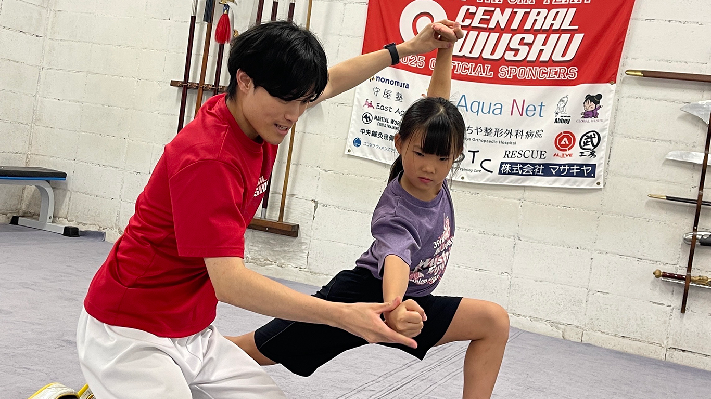

誰でも楽しくできる！
セントラルウーシューでは４歳から８０代の方まで幅広い年代の方が所属し日々技を磨いています。
コースは４つあり『カンフー』『太極拳』『キッズ・ジュニア』『フィットネス』から自分にあったクラスをお選びいただけます！通常クラス以外にも、個別指導の『パーソナルレッスン・トレーニング』や、ヌンチャク講座などの『イベントレッスン』もあります。子供から大人まで・愛好者から競技選手まで、一生楽しめるのがカンフーの特徴です。カンフーの学びは人生の喜びとなります。
Kung Fu
カンフー
より本格的なカンフーを楽しめるカンフークラス。 レベルが上がると棍や刀などの機械種目にも挑戦できます。 こどもから大人まで一緒に練習できるので、親子での参加も可能です！

Tai Chi
太極拳（名古屋八事本部道場のみ）
ゆったりと流れるような動作で、無理なく健康な身体を目指します。 運動習慣をつけたい方、ゆったりとした動作で体の使い方やバランスを整えたい方におすすめ。

Junior
ジュニア
キミを照らす、カンフーの輝き！ まるでアクションスター！カンフーが君の個性・特技になる。 ４歳からはじめられるジュニアのカンフークラスで、個々のレベルに応じて武術の基礎から応用技までチャレンジできます。 初めて習い事をはじめる幼稚園、保育園のお子様から、小学生、中学生まで安心してはじめられます！

体験・見学はこちら！
お電話の場合は「セントラルウーシューのホームページを見た」とお伝え下さい。
また、レッスン中等お電話に出られないことがございます。
お手数ですが、留守番電話にご要件を残していただけましたら折り返しお電話させていただきます。
instructor
インストラクター
下起 悦郎
(ETSURO SHITAOKOSHI)
2012年名古屋を中心とした武術チームCENTRAL WUSHUを設立。
2007年 全日本武術太極拳選手権大会 剣術1位 槍術1位
2009年 世界武術選手権大会（カナダ・トロント） 剣術2位
2011年 世界武術選手権大会（トルコ・アンカラ） 剣術5位
2012年 アジア武術選手権大会（ベトナム・ホーチミン） 槍術3位
2016年 全日本武術太極拳競技会 長拳1位 短器械1位
2018年 全日本武術太極拳選手権大会 長拳1位
（公社）日本武術太極拳連盟選手強化委員会強化コーチ
愛知県武術太極拳連盟理事
鵜飼 匠海
(TAKUMI UKAI)
初心者から上級者、子どもから大人まで参加する生徒一人一人に寄り添うことをモットーにしている。
2019年 いきいき茨城ゆめ国体 成年の部6位
（公社）日本武術太極拳連盟公認長拳普及指導員
informathion
情報

名古屋八事本部道場
（なごややごとほんぶどうじょう）
ご予約・お問い合わせ
TEL 052-836-1070
住所〒468-0077
名古屋市天白区八事山210日興ビル1階
アクセス・公共交通機関でお越しの方
名古屋市営地下鉄、名城線・鶴舞線「八事駅」2番出口より飯田街道を塩釜口方面へ徒歩5分。
名城大学薬学部（八事キャンパス）向かい側。
・お車でお越しの方
飯田街道沿い、名城大学薬学部向かい側。
専用駐車場はございません。お近くのコインパーキングをご利用下さい。
岐阜道場
（ぎふどうじょう）
ご予約・お問い合わせ
TEL **(名古屋本部道場)** 052-836-1070
住所〒501-6018
岐阜県羽島郡岐南町みやまち4丁目102
アクセス・公共交通機関でお越しの方
名鉄各務原線「岐南駅」より徒歩6分
・お車でお越しの方
専用駐車場
あり
道場前の駐車場をご利用ください。
駐車可能台数に限りがございます。